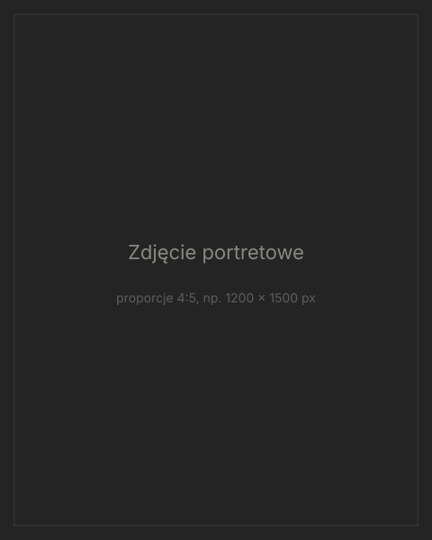

Psycholog sportu · Wrocław
Ignacy Mikołajczak
Piłka nożna jest ze mną od mundialu w 2006 roku i przez wiele lat sam grałem. Dziś jako psycholog sportu wspieram zawodników, drużyny, trenerów i rodziców, bo sport to coś więcej niż wynik.
O mnie
Wierzę, że sport powinien dawać więcej niż lepsze wyniki. Powinien pomagać ludziom rozwijać się i wyposażać ich w umiejętności, które przydają się daleko poza boiskiem. Pracuję z drużynami młodzieżowymi i juniorskimi w piłce nożnej i piłce ręcznej.
Kariera sportowa
- Wczytywanie…
Edukacja
- Wczytywanie…
Doświadczenie zawodowe
Wczytywanie…
Moja filozofia
-
Więcej niż gra
Sport ma pomagać rosnąć jako człowiek, nie tylko jako zawodnik. Przywództwo, odporność, dyscyplina i odpowiedzialność, wyćwiczone na boisku, procentują później w szkole, pracy i życiu.
-
Metody sprawdzone w badaniach
Pracuję narzędziami, których skuteczność potwierdzono w badaniach z psychologii sportu: treningiem uwagi, regulacją pobudzenia, wyznaczaniem celów i rutynami przedstartowymi.
-
Umiejętności, które się trenuje
Pewność siebie i koncentracja to nie cechy, z którymi się rodzimy. Można je ćwiczyć tak samo systematycznie jak szybkość czy technikę.
-
Współpraca z trenerem i sztabem
Jeśli zawodnik się na to zgadza, ustalam wspólny kierunek z trenerem, fizjoterapeutą i rodzicami. Przy tym zawsze szanuję poufność rozmów.
-
Samodzielność zamiast zależności
Moim celem jest, by zawodnik z czasem coraz rzadziej potrzebował mojego wsparcia i w kluczowym momencie meczu umiał sam sięgnąć po właściwe narzędzia.
Jakie problemy pomagam rozwiązać
-
Stres startowy
Ścisk w żołądku przed meczem, nieprzespana noc przed zawodami, „sparaliżowane” nogi w pierwszych minutach. Uczymy się regulować pobudzenie tak, by pracowało na Twoją korzyść.
-
Koncentracja
Rozproszenie po błędzie, myślenie o wyniku zamiast o kolejnej akcji. Ćwiczymy powrót uwagi do „tu i teraz” w ciągu kilku sekund.
-
Powrót po kontuzji
Lęk przed ponownym urazem i utrata zaufania do własnego ciała. Wspieram zawodnika na każdym etapie rehabilitacji, w kontakcie z fizjoterapeutą.
-
Motywacja
Spadek zaangażowania, trening „na autopilocie”, brak jasnego celu. Wspólnie szukamy tego, co naprawdę napędza Cię do pracy.
-
Wypalenie
Chroniczne zmęczenie, cynizm wobec sportu i poczucie, że wysiłek nie ma sensu. Pomagam odbudować równowagę między obciążeniem a regeneracją.
-
Presja wyniku
Oczekiwania trenera, rodziców, kibiców i własne. Uczymy się oddzielać wartość człowieka od rezultatu meczu i grać odważniej.
Jak wygląda współpraca
-
Konsultacja wstępna
Krótka rozmowa, w której opowiadasz, z czym przychodzisz, a ja wyjaśniam, jak mogę pomóc i czy współpraca ma sens.
-
Diagnoza
Jedno lub dwa spotkania, wywiad i standaryzowane kwestionariusze. Na tej podstawie ustalamy konkretne, mierzalne cele.
-
Regularne sesje
Spotkania co tydzień lub co dwa tygodnie, stacjonarnie albo online. Między sesjami ćwiczysz konkretne techniki na treningach i w meczach.
-
Ewaluacja
Co kilka tygodni sprawdzamy postępy względem celów i decydujemy, czy kontynuować, zmienić kierunek, czy zakończyć współpracę.
Kontakt
Napisz w kilku zdaniach, jaki sport uprawiasz i z czym chcesz pracować. Współpracuję z zawodnikami, drużynami i klubami.
kontakt@przyklad.pl